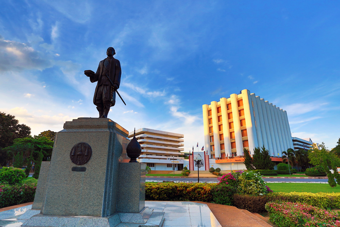

ประวัติ
สาขาวิชาวิทยาการคอมพิวเตอร์ คณะวิทยาศาสตร์ มหาวิทยาลัยขอนแก่น จัดตั้งอย่างเป็นทางการเมื่อวันที่ 23 มีนาคม 2537 ผลิตบัณฑิตระดับปริญญาตรีมาแล้ว 21 รุ่น และปริญญาโทมาแล้วมากกว่า 10 รุ่น ปัจจุบันสาขาวิชาเปิดสอนหลักสูตรทั้งระดับปริญญาตรี ปริญญาโท และปริญญาเอก รวม 3 สาขาวิชา คือ สาขาวิชาวิทยาการคอมพิวเตอร์ สาขาวิชาเทคโนโลยีสารสนเทศและการสื่อสาร และสาขาวิชาภูมิสารสนเทศศาสตร์ มีจำนวนนักศึกษารวมประมาณ 1,600 คน แบ่งเป็นนักศึกษาระดับปริญญาตรี 1,300 คน และระดับปริญญาโท และปริญญาเอก 300 คน มี อาจารย์ประจำ รวมทั้งสิ้น 37 คน และ อาจารย์ชาวต่างชาติสอนเสริมภาษาอังกฤษ 1 คนสาขาวิชาแบ่งงานวิจัยออกเป็น 5 กลุ่มวิจัย เพื่อรองรับนักศึกษาในการทำวิจัยให้มีความเชี่ยวชาญเฉพาะด้าน และผลิตผลงานวิจัยเพื่อตีพิมพ์ในวารสารทั้งระดับประเทศและระดับนานาชาติ และสาขาวิชามีห้องปฏิบัติการเพื่อรองรับการเรียนการสอนและการวิจัยทั้งสิ้น 12 ห้อง สาขาวิชาวิทยาการคอมพิวเตอร์ มีความมุ่งมั่นที่จะผลิตบัณฑิตที่มีคุณภาพ มีคุณธรรมจริยธรรม และมีความเชี่ยวชาญเฉพาะด้าน ตรงกับความต้องการของผู้ประกอบการ โดยความร่วมมือกับหน่วยงานภายนอกแบบไตรภาคี ประกอบด้วยสาขาวิชา (ผู้ผลิตบัณฑิต) บริษัทเจ้าของผลิตภัณฑ์ (ผู้จัดหาเครื่องมือ) และบริษัทซอฟต์แวร์ (ผู้ใช้บัณฑิต) ซึ่งทั้ง 3 องค์กรร่วมมือกันอย่างใกล้ชิด เพื่อผลิตบัณฑิตที่พึงประสงค์ อีกทั้งลงนามความร่วมมือกับหน่วยงานภายนอก เช่น สวทช เพื่อให้สาขาวิชาเป็นศูนย์สอบมาตรฐานวิชาชีพไอที (Information Technology Professional Examination—ITPE) และ ลงนามความร่วมมือกับ 12 สถาบันในภาคตะวันออกเฉียงเหนือ เพื่อร่วมมือพัฒนาบุคลากรและงานวิจัยด้าน IT
สถานที่ตั้ง
สาขาวิชาวิทยาการคอมพิวเตอร์ ตั้งอยู่ ณ อาคารวิทยาศาสตร์SC.06 ชั้น 3 คณะวิทยาศาสตร์ มหาวิทยาลัยขอนแก่น โทรศัพท์. 0-4336-2188-90 ต่อ 101-105 โทรสาร. 0-4334-2910

ปรัชญา
วิทยา จริยา ปัญญา
วิสัยทัศน์
สาขาวิชาวิทยาการคอมพิวเตอร์ มหาวิทยาลัยขอนแก่น มุ่งพัฒนาไปสู่หน่วยงานการศึกษาที่มีความเป็นเลิศ ที่จะผลิตบัณฑิตทั้งระดับปริญญาตรีและระดับบัณฑิตศึกษาทางด้านวิทยาการคอมพิวเตอร์และเทคโนโลยีสารสนเทศ เพื่อเป็นแหล่งความรู้และบริการวิชาการ แก่สังคมในภูมิภาคภาคตะวันออกเฉียงเหนือ ประเทศชาติและอนุภูมิภาคลุ่มน้ำโขง อันจะนำไปสู่มาตรฐานระดับสากล

พันธกิจ
มุ่งผลิตบัณฑิตทางด้านวิทยาการคอมพิวเตอร์และเทคโนโลยีสารสนเทศที่เพียบพร้อมด้วยความรู้ สติปัญญา จริยธรรม การสอนวิชาพื้นฐานทางด้านวิทยาการคอมพิวเตอร์และเทคโนโลยีสารสนเทศแก่นักศึกษาคณะต่างๆ ของมหาวิทยาลัยขอนแก่น การวิจัยเพื่อสร้างองค์ความรู้ให้เกิดการพัฒนาที่สมดุลและยั่งยืน การบริการวิชาการแก่สังคมในภาคตะวันออกเฉียงเหนือ และการเชื่อมโยงเครือข่ายความร่วมมือ และส่งเสริมทางวิชาการกับประเทศต่างๆ ในอนุภูมิภาคลุ่มน้ำโขงและภูมิภาคอื่น
วัตถุประสงค์
- ผลิตบัณฑิตและมหาบัณฑิต สาขาวิชาวิทยาการคอมพิวเตอร์ สาขาวิชาเทคโนโลยีสารสนเทศ และสาขาวิชาการรับรู้จากระยะไกลและสารสนเทศภูมิศาสตร์
- ให้บริการจัดการเรียนการสอนรายวิชาพื้นฐานทางด้านคอมพิวเตอร์และเทคโนโลยีสารสนเทศแก่คณะวิชาต่างๆ ภายในมหาวิทยาลัยขอนแก่น
- วิจัย ศึกษาค้นคว้า สร้างองค์ความรู้ให้เกิดการพัฒนา และนำความรู้ เทคโนโลยีไปประยุกต์ ถ่ายทอดในการพัฒนาศักยภาพของประเทศเพื่อการแข่งขัน
- ให้บริการวิชาการ การวิเคราะห์ การให้คำปรึกษา การฝึกอบรม ทางด้านเทคโนโลยีสารสนเทศที่ทันสมัยต่อสังคม
- ทำนุบำรุงศิลปวัฒนธรรม ด้วยการร่วมอนุรักษ์สิ่งที่ดีงามของสังคม และประยุกต์เทคโนโลยีใหม่ให้สอดคล้องต่อการอนุรักษ์ศิลปวัฒนธรรมของไทย